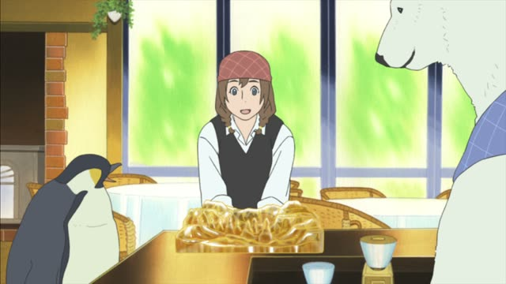
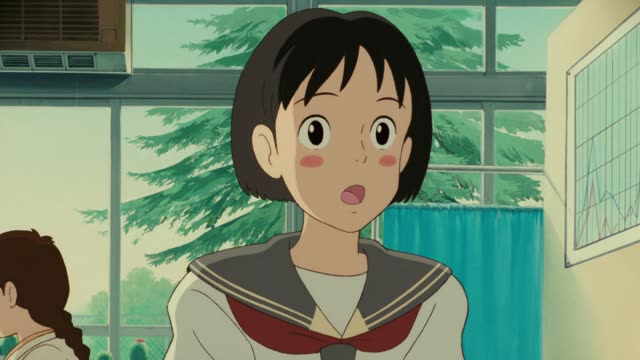
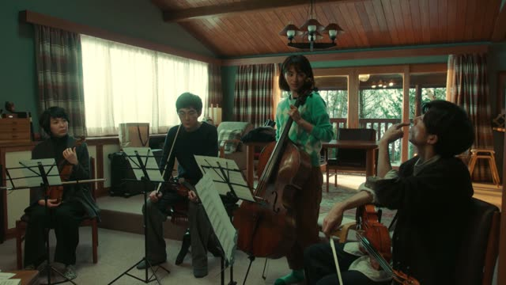

～にくい
| Polite | ～にくいです |
|---|---|
| Casual | ～にくい ます-stem + にくい |
Same meaning: "hard to do". Only the politeness changes. It works like an い-adjective: にくくない, にくかった.
Kekkon Dekinai Otoko · Episode 1
あっ、まあ、ちょっととっつきにくい人ですけれども
"Well, he's a bit hard to approach, but" [the architect]
Verb ます-stem + にくい means "hard to do": 分かります → 分かりにくい. It's the opposite of ～やすい and works like an い-adjective.
On this card, a manager warns a client about Kuwano: a little hard to get along with. ですけれども makes it polite.
It's about how hard the thing itself is to do, not about your feelings.
Teasing Master Takagi-san · Season 2, Episode 9
なんか渡しにくいな。
"It's kind of awkward to hand it over."
On this card, Nishikata has a present for Takagi and can't find the moment. 渡しにくい: hard to give.
Quick Examples
A heavy dictionary.
この辞書は使いにくい。
"This dictionary is hard to use."
CasualA coworker's handwriting.
この字は読みにくいですね。
"This writing is hard to read, isn't it."
PoliteWearing new shoes.
この靴、歩きにくいな。
"These shoes are hard to walk in."
CasualAsking your boss something awkward.
ちょっと言いにくいんですが…
"This is a bit hard to say, but..."
A common way to start bad news.
PoliteWith and without
この本は読みやすい。
"This book is easy to read."
この本は読みにくい。
"This book is hard to read."
Examples from Media
1 Litre of Tears · Episode 3
池内さんの指揮、合わせにくいんですけど。
"It's hard to keep in time with your conducting."

Shirokuma Cafe · Episode 48
すごいことはすごいけど、わかりにくいね。
"It's amazing, sure, but hard to make out."
A candy sculpture of a world heritage site.

Whisper of the Heart
歌いにくくない？
"Isn't it hard to sing?"
Kekkon Dekinai Otoko · Episode 6
なあ、俺じゃ聞きにくいから、なっ。
"Come on, it's awkward for me to ask."
Good Morning Call · Episode 5
言い出しにくかったのも分かるけど
"I get that it was hard to bring up"
The Wind Rises
あたしも店を閉めにくくてね。
"So it's hard for me to close the shop."
A kid waits outside every night.
Aggretsuko · Season 2, Episode 9
やりにくいなあ…
"This is hard to do..."

Quartet · Episode 1
僕、鼻毛伸びにくいんだよ。
"My nose hair doesn't grow easily."